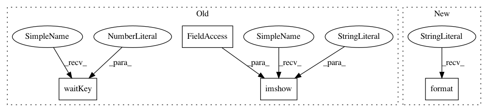

914b6309164ae4b6586fab367a0d59fd09b1c77a,test_frcnn.py,,,#,69
Before Change
cv2.rectangle(img_scaled, (textOrg[0] - 5,textOrg[1]+baseLine - 5), (textOrg[0]+retval[0] + 5, textOrg[1]-retval[1] - 5), (255, 255, 255), -1)
cv2.putText(img_scaled, textLabel, textOrg, cv2.FONT_HERSHEY_DUPLEX, 1, (0, 0, 0), 1)
print("Elapsed time = {}".format(time.time() - st))
cv2.imshow("img", img_scaled)
cv2.waitKey(0)
//cv2.imwrite("./imgs/{}.png".format(idx),img_scaled)
print(all_dets)
After Change
print("Elapsed time = {}".format(time.time() - st))
//cv2.imshow("img", img_scaled)
//cv2.waitKey(0)
cv2.imwrite("./results_imgs/{}.png".format(idx),img_scaled)
print(all_dets)
In pattern: SUPERPATTERN
Frequency: 3
Non-data size: 4
Instances
Project Name: kbardool/keras-frcnn
Commit Name: 914b6309164ae4b6586fab367a0d59fd09b1c77a
Time: 2017-06-19
Author: alix.leroy@net.estia.fr
File Name: test_frcnn.py
Class Name:
Method Name:
Project Name: yhenon/pytorch-retinanet
Commit Name: 79270386915ac637ca30a6e12eede5414bbc264c
Time: 2018-06-12
Author: yannhenon@gmail.com
File Name: test.py
Class Name:
Method Name:
Project Name: kbardool/keras-frcnn
Commit Name: 1427fdcab8d2a20a9181e3eb391c01b8da225761
Time: 2020-03-25
Author: s0535440@htw-berlin.de
File Name: test_frcnn.py
Class Name:
Method Name: